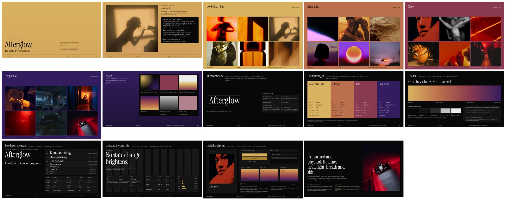
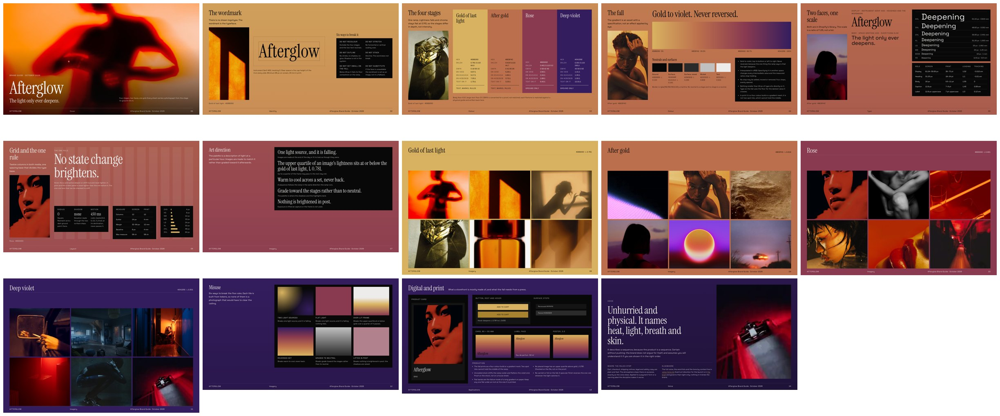
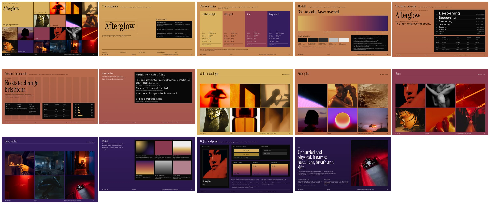
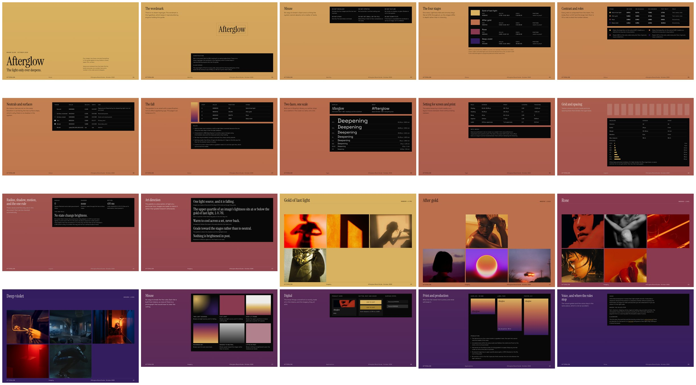

Afterglow brand guide · density directions · 10 October 2026
The current guide gives each spec panel a whole sheet, so the first photograph doesn't appear until sheet 13, 58% of the way down. Each direction below is a complete deck built from the guide's own panels, numbers and photographs, with nothing rewritten, and differs only in order and layout. Open any deck to read it at full size.
Now
20sheetsNow
13first photograph, sheetEvery direction
14sheetsEvery direction
1–2first photograph, sheetThe photographs become chapter one. Art direction and the four stage spreads run straight after the cover, and the system follows as chapter two, on night.
The fall plays out once, gold to violet, through the photographs. After deep violet the ground goes to void, which is the next thing the light does, and it lets every reading sit on one surface. Each system sheet leads with one thing at scale: the wordmark, four tall stage swatches with their readings set inside, the fall as a band, the type specimen, the one rule.

The system keeps its place and its continuous fall, but every spec sheet carries a photograph from the stage its ground sits in. The cover is a photograph.
The photographs stop being a section and become the guide's texture. A reader never turns a page without one. The stage spreads still come after the system, at sheet 8, but by then they have seen six. The cost is width: the readings share the sheet with an image, so the system sheets are the densest of the three.

The cover is a contact sheet of the whole photographic world, twenty frames in their four stages, with an index on the next sheet. The system then runs compressed on the fall.
It shows the best part first, all of it at once, and then says where everything is. Like A, the system sheets each lead with one element at scale, but they stay on the fall rather than going to night, so the ground deepens across the whole document as it does now.

For comparison: 20 sheets, with the first photograph on sheet 13.

Each sheet that was one panel on a full page is merged with its neighbour, and each merged sheet leads with one element at real scale instead of equal boxes. Digital and print share a sheet. Voice is set as type on the ground, beside a photograph.
One thing is unchanged and is yours to decide: readings still sit in void panels, which is the guide's own rule, because a number read off a mid-ramp ground fails contrast. A blind critic held all three against Frame.io and named those panels as the remaining gap. Direction A sidesteps it by putting the system on night, where a panel is barely a box at all.